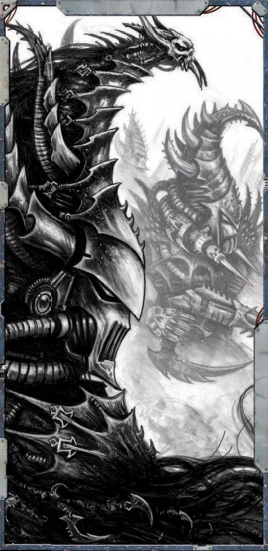

在探险者击败扎尔加恩、平息灵魂掠夺者，从而拯救了阴影枢纽（也拯救了他们自己）之后，他们还可以视情况参与“复仇之战”或“虚空之战”章节中的任意后续遭遇。
然而，无论战局如何发展，最终总要清点这场战争的得失，看看谁最终站在尸堆之上，成为阴影枢纽的主人：

·如果奴隶起义被镇压，叛军舰队也被击败，裂爪阴谋团将继续维持其对阴影枢纽的残酷统治。如果探险者站在德雷卡鲁斯（或裂爪阴谋团的其他在世领主）一边，他们便共享这场黑暗的胜利。·如果奴隶起义成功，但叛军舰队被击溃（或虽然获胜但萨莱恩·莫恩已死），奴隶们将完全掌控阴影枢纽。只要探险者在“复仇之战”章节中通过至少两次遭遇协助了叛军，他们便共享这场胜利。
·如果奴隶起义失败，但叛军舰队获胜且萨莱恩·莫恩还活着，那么萨莱恩·莫恩便实现了她的野心。如果探险者没有公开背叛她，在“虚空之战”章节中通过至少一次遭遇协助了她，并且没有激怒她导致她背叛，他们便共享她的胜利。
·如果奴隶起义成功、叛军舰队攻击成功，或两者都成功，但探险者已铲除或排除了任何可能与他们争夺阴影枢纽控制权的非玩家角色（至少包括萨莱恩·莫恩、德雷卡鲁斯、安亚·沈、多莫斯贤者以及任何重要的黑暗灵族贵族），那么他们便独占阴影枢纽，以及这场夺权所带来的所有声望与危险。
·如果奴隶起义成功，叛军舰队也战胜了裂爪阴谋团，那么两个派系将争夺阴影枢纽的控制权（更多详情见“不安的和平”）。
无论冒险如何结束，无论探险者成功或失败，主持人都可以将阴影枢纽作为后续冒险的舞台。它位于科洛努斯扩区内、隐藏于网道之中的位置，使其成为交易的理想地点（尤其是那些连落脚港都不愿触碰的货物），也是玩家角色在虚空中旅行时休整和补给的绝佳去处，无论最终谁成为这里的主人（不过根据探险者的行动，有些主人比其他人对探险者更友好）。
奖励结算
·饶安雅拉一命，让她欠探险者一个人情：200成就点
·偷走灵魂掠夺者：200成就点
·帮助促成裂爪阴谋团的覆灭：300成就点
·帮助单一派系完全掌控阴影枢纽：300成就点
·在不摧毁灵魂掠夺者的前提下使其失效：300成就点
·维持与萨莱恩·莫恩的联盟：150成就点
·将他们在阴影枢纽中的份额出售给萨莱恩·莫恩或其他买家：300成就点
·帮助将卢德沃斯·塔恩修士返回帝国之拳战团：150成就点
·帮助安亚·沈船长夺回她的虚空舰：100成就点
·确保自己在阴影枢纽冷贸易中的一席之地：100成就点
·与虚假黎明教派建立贸易渠道：50成就点
·帮助多莫斯贤者以自由之身留在盖兰天球进行研究：100成就点
·将多莫斯贤者送回机械教（而非允许他留下）：50成就点
·在征程结束时仍然效忠的每位其他重要幸存盟友（未列于上述的任何人）：50成就点（最高250）
·为自己或自己的王朝独占阴影枢纽：500成就点
利润与成就
如果探险者在本冒险的宏伟征程中累计获得至少2500成就点，则视为获得了利润。如果未能达到该目标但存活了下来，他们仍应获得2点利润点，以反映他们在扩区中名声的增长，其他商人会传颂他们疯狂野心的故事。但总体而言，这次旅程在经济上是一场灾难，他们的损失虽然可以弥补，但与收益持平甚至超出。如果他们成功，则因完成此宏伟征程而获得6点利润点，每超出2500成就点100点，额外获得1点利润点。此外，如果他们选择在阴影枢纽中保有一定份额（无论是与奴隶起义共享胜利，还是独占此地），探险者在阴影枢纽内进行交易时，利润点视为永久提高5点，以反映他们在此地的影响力。
经验值
探险者面对了艰巨的挑战和可怕的敌人，但如果他们能从阴影枢纽所能投向他们的一切磨难中幸存下来，这些苦难和试炼无疑令他们变得更加强大：
·领导策划从竞技坑发起的起义：100 xp
·在战斗中击败安雅拉：200 xp
·重返灵魂掠夺者：200 xp
·在战斗中击败德雷卡鲁斯（或萨莱恩）：200 xp
·摧毁灵魂掠夺者：100 xp
·在战斗中击败扎尔加恩·库尔：250 xp
·在胜利的派系之间进行调解：50 xp
不安的和平
在本冒险中，有可能奴隶起义和萨莱恩·莫恩领导的影棘阴谋团都实现了各自的主要目标。然而，这两个团体有些目标是相互排斥的。首先，前奴隶们希望保持自由，他们中的大多数希望找到离开阴影枢纽的途径，而萨莱恩则更希望看到他们重新沦为奴隶，以便从他们的役使和痛苦中获利。说服萨莱恩让获得自由的囚犯离开并非易事，而收集所需的舰船将他们运离阴影枢纽也同样困难。此外，前奴隶中的某些派系可能认为他们帮助夺取的城市理当归他们所有，但没有任何黑暗灵族，尤其是在权势正盛的萨莱恩·莫恩，会愿意与一群异星人分享统治权。整个局面复杂而危险。机会主义盟友如冷贸易商、叛军舰队中的船长，甚至影棘阴谋团和萨莱恩·莫恩本人，如果有利可图，都可能背叛探险者，而大多数被解放的奴隶宁愿战死也不愿安静地回到锁链之中。
在这两个派系之间进行调解对探险者来说既是巨大的机会，也是巨大的风险，因为不可能让所有人都完全满意。随着阴影枢纽政治战争的推进，谈判、交易和背叛可能提供远超出本冒险范围的冒险素材。然而，一般来说，每个派系欠探险者的越多，探险者就越有可能说服（或施压）找到对自己和王朝有利的解决方案。